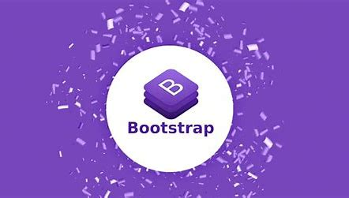
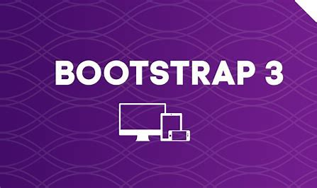
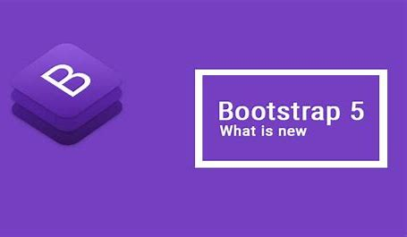

 Bootstrap est un framework gratuit, source ouverte, basé sur HTML, CSS et Javascript. Elle est créée pour construire les interfaces de site web compatibles avec tous les équipements avec différentes tailles d’écran.
Le web design bien avant l’avènement de Bootstrap.
L’abondance des bibliothèques dans l’univers du développement web ne date pas d’aujourd’hui,
bien avant Bootstrap il en avait tout une panoplie,
en exemple nous pourrons citer 1KB CSS GRID et SenCSS.
Mais toutes ces bibliothèques étaient incapables de fournir une structure de code à suivre pour les développeurs lors du développement d’une plateforme.
Les entreprises étaient alors confrontées aux problèmes importants de maintenance et du coup elles dépensaient énormément pour maintenir leur plateforme.
Cette situation qui exaspérait et les développeurs et les entreprises sera à l’origine de l’histoire de Bootstrap.
Bootstrap voit le jour suite à l’initiative de deux ingénieurs de Twitter.
En 2010, l’idée survint chez Marc OTTO employé de Twitter, de créer un outil capable d’harmoniser le travail de toute l’équipe de développement de son entreprise,
car ils s’heurtaient eux aussi aux mêmes problèmes.
Marc OTTO fut rejoint par Jacob THORTON dans le développement du projet,
car ce dernier avait vu l’utilité du projet de son collègue et avait compris que l’outil leur permettrait de minimiser les incohérences et
fournirait un cadre regroupant les éléments et fonctions nécessaires au développement d’une interface.
Le projet naquit sous le nom de Twitter Blueprint après plusieurs mois de travail acharné des deux ingénieurs.
Pendant un an l’outil fut utilisé au sein de l’entreprise et toute l’équipe de développement et
les dirigeants de l’entreprise constatèrent la valeur de la librairie crée par OTTO et THORTON, car elle avait limité les incohérences,
avait permis une augmentation de la productivité et avait aussi solutionné bien nombres de problèmes de web design de l’époque.
Dans le but d’aider les développeurs web à profiter de la librairie conçue par les employés de Twitter,
il fut décidé au sein de l’entreprise de la placer sous licence open source.
C’est ainsi que le 19 août 2011 Twitter Blueprint fut mise à la disposition du public sous licence open source avec un nouveau nom :
La sortie de cette première version avait apporté beaucoup de nouveautés dans l’écosystème du développement web à l’époque. Elle offrait une structure de code de base bien solide autour de laquelle les développeurs pouvaient concevoir leur projet, ce qui réduisait le temps de travail, augmentait la productivité et le travail final était optimal. Elle fournissait des composants prêts à l’emploi tels que les boutons, les tableaux, les formulaires; aussi supportait les navigateurs les plus utilisés de l’époque (Internet Explorer, Chrome, Firefox, Safari et Opera), ce qui permettait au projet dans lequel elle a été implémentée de s’afficher proprement sur tous ces navigateurs. Les éléments HTML pour la typographie sont soignés par Bootstrap pour que leur présentation sur une page web soit convenable et attrayante.
Cette deuxième version qui fut sortie officiellement le 31 Janvier 2012 avait encore suscité beaucoup d’engouement autour du projet. Car en effet il proposait deux systèmes de grille, un qui est fixe et l’autre qui est fluide. Et Les deux systèmes de grille étaient tous plus simplifiés que ceux proposés par les autres librairies. Bootstrap offrait le choix au développeur pour ses mises en pages d’utiliser les systèmes de grille ou non, car ils étaient intégrés dans un fichier différent du fichier principal. Les composants non utilisés dans la première version furent retirés et les composants les moins utilisés furent retravaillés pour qu’ils répondent aux mieux aux attentes des développeurs. Pour permettre une interaction facile et extensible, des plugins jQuery personnalisés furent ajoutés dans la bibliothèque pour donner vie aux projets qui l’implémentaient. Elle proposait une documentation bien fournie qui montrait comment utiliser les composants de la bibliothèque avec des exemples clairs et précis.
 Elle fut publiée un 19 août 2013 après plusieurs mois de travail de l’équipe de maintenance. Et à la surprise générale de tout le monde, la bibliothèque a été totalement reconstruite. C’était pour de bonne raison cette reconstruction, car à cette période l’intérêt pour les tablettes et smartphones était grandissant et pour être à la page il fallait penser à un outil capable de créer des applications web qui offraient un rendu impeccable sur ces petits supports. C’est ainsi que la version 3 de Bootstrap offrait la priorité aux petits terminaux en passant à l’approche mobile-first. Ceci s’est fait en incluant dans le fichier principal de Bootstrap 3 le système de grille fluide basé sur un système de colonage et en abandonnant le système de grille fixe. Les composants pannel et list group font leur apparition, d’autres composants tels que les submenus ou encore typeahead ont été abandonnés et certains composants se sont vu renforcés avec la fonctionnalité de la responsivité les adaptant aux petits support, c’est le cas de la Navbar et du Modal (boîte modale).
Après la sortie de la version 3.3.7 de Bootstrap le 25 juillet 2016, il a fallu patienter plus de 2ans avant d’assister à la sortie de la version stable de Bootstrap 4 un 19 janvier 2018. Au total 6 versions alpha de Bootstrap 4 et 3 versions bêta de Bootstrap ont précédé la version stable de Bootstrap 4. Le préprocesseur LESS est abandonné au profit de SASS qui permet de compiler plus rapidement les fichiers CSS. Les composants Well, Thumbnail et Pannel sont remplacés par le nouveau composant Card beaucoup plus flexible et qui offre plusieurs options de mise en page. Bootstrap 4 intègre désormais le module Flexbox qui permet de disposer convenablement et naturellement des éléments dans un conteneur parent flexible avec la possibilité de modifier la direction des éléments enfants et de les aligner selon votre volonté. Le système de grille conserve le système de colonage mais a été renforcé avec la flexbox, plusieurs composants tels que les Modals, la pagination, les Navs ou encore la Navbar ont implémenté la Flexbox.
 Les nouveautés avec Bootstrap 5 :